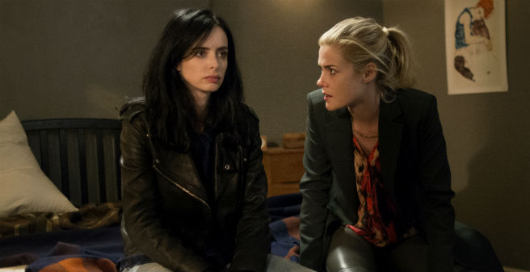
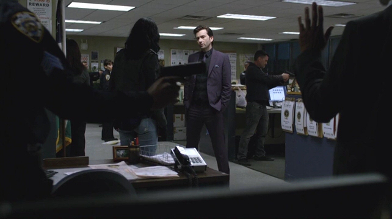

Jessica Jones
Marvel's Jessica Jones, or simply Jessica Jones, is an American web television series created for Netflix by Melissa Rosenberg, based on the Marvel Comics character of the same name. Krysten Ritter stars as Jessica Jones, a former superhero who opens her own detective agency. Mike Colter, RaCarrie-Anne Moss, and David Tennant also star in season one. A version of the series was originally in development by Rosenberg for ABC in 2010, which was eventually passed on. By late 2013, Rosenberg reworked the series in December 2014. Jessica Jones is filmed in New York City, in areas that still look like old Hell's Kitchen.
Main Cast
Premise
Following the tragic end of her brief superhero career, Jessica Jones tries to rebuild her life as a private investigator, dealing with cases involving people with remarkable abilities in New York City.
Episodes
Season 1(2015)
Jessica Jones, an alcoholic private investigator "gifted" with superhuman strength and flight, delivers a subpoena to strip-club owner Gregory Spheeris for lawyer Jeri Hogarth (who is having an affair with her assistant Pam behind the back of her wife Wendy Ross-Hogarth), exposing her abilities to him in the process. While not working, Jones spies on Luke Cage, a bar owner who sees her looking into his bar and offers her free alcohol as a "Ladies Night" promotion, leading to the two sleeping together.
Cage, having not known that the woman was married, confronts the woman about it, and when she goes to her husband, he attacks Cage with a group. Jones helps fight off the men, and learns that Cage is gifted with unbreakable skin. Hogarth agrees to represent Shlottman if Jones can prove that Kilgrave exists. Jones remembers leaving Kilgrave to die after he was hit by a bus, and now tracks down the ambulance driver who had picked him up.
Jones and Cage bond over their mutual powers, while Jones also tracks down a surgical grade anesthetic to subdue Kilgrave with. Hogarth, now divorcing her wife and unwilling to risk herself and her reputation despite the doctor's testimony, organizes for Walker to interview Shlottman about Kilgrave live on her radio talk show. Walker asks that anyone who believes they have been approached or controlled by Kilgrave contact Hogarth
Jones tracks Eastman's husband to a rendezvous with his girlfriend only to discover a trap set by Eastman, who blames gifted people for the death of her mother during the "Incident" and who learned of Jones' powers from Spheeris. Angered as she recalls the death of her own parents, Jones convinces the Eastmans to leave her alone with a show of her power and a bluff over the number of other gifted in the city.
Simpson supplies ex-special operations skills and contacts, including access to a hermetically sealed room in which Kilgrave could be kept once the effects of the anesthetic wear off. They follow Ducasse to his daily meeting with Kilgrave where photographs of Jones are exchanged for drugs, which Kilgrave had forced Ducasse to become addicted to so he would obey Kilgrave even after his powers wore off, after around 12 hours of no contact.
Jones covers up Shlottman's death and Kilgrave's involvement in it, and begins searching morgues for Thompson's body as a lead. Affected by an increasing lack of sleep, Jones is injured in an accident, but does manage to find Clemons' body and deduces that Simpson killed him rather than Kilgrave.
After paying a fellow inmate to beat her, Shlottman confesses to Jones that she is pregnant with Kilgrave’s child and has been trying to miscarry. Jones gives her an abortion pill; Hogarth secretly takes the fetal remains. Cage hires Jones to help find the brother of someone who has evidence on the death of Cage's wife, Reva Connors.
When Jones allows this, Kilgrave believes that he finally controls her again. However, when he tells her to say "I love you", Jones says it to Walker instead, and snaps Kilgrave's neck. Jones is arrested for the murder, but Hogarth secures her release, leaving her to get calls from people around the city who have heard of her heroics and seek her assistance.
Season 2
The series was renewed for a second season of 13 episodes on January 17, 2016. It will film back-to-back with Marvel's The Defenders, with the potential for overlap between the two productions. In July 2016, Netflix COO Ted Sarandos stated that the season would not debut until 2018 at the earliest, after The Defenders released in 2017.